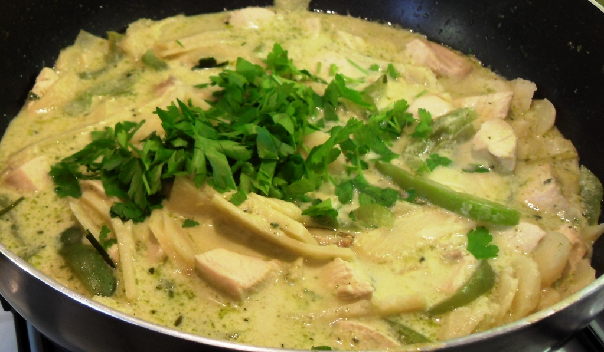

Green Thai Chicken Curry

Ingredients
- 8 Chicken Thighs
- Ayam Green Curry paste
- 1 cup chicken stock
- green beans
- 1 large onion, sliced
- 1 can sliced bamboo shoots, drained
- asian mushrooms
- 1/4 piece lemon or handful lemongrass
- 1-2 limes
- 1/2 bunch basil
- 1 can coconut milk or cream
- 1 tbsp. oil
Method
- Heat oil in pan on medium high
- Add 1 tbsp. curry paste. It's normal to not be able to breathe ;)
- Add onion and cook until soft
- Add beans, mushrooms and bamboo shoots and lemon piece
- Add chicken stock and coconut milk and bring to a low boil
- Stir chicken through and push all chicken pieces under the liquid
- Keep on a low boil for at least 15 minutes / until chicken is cooked through
- Add basil and simmer until ready to eat. Make rice.
- Serve